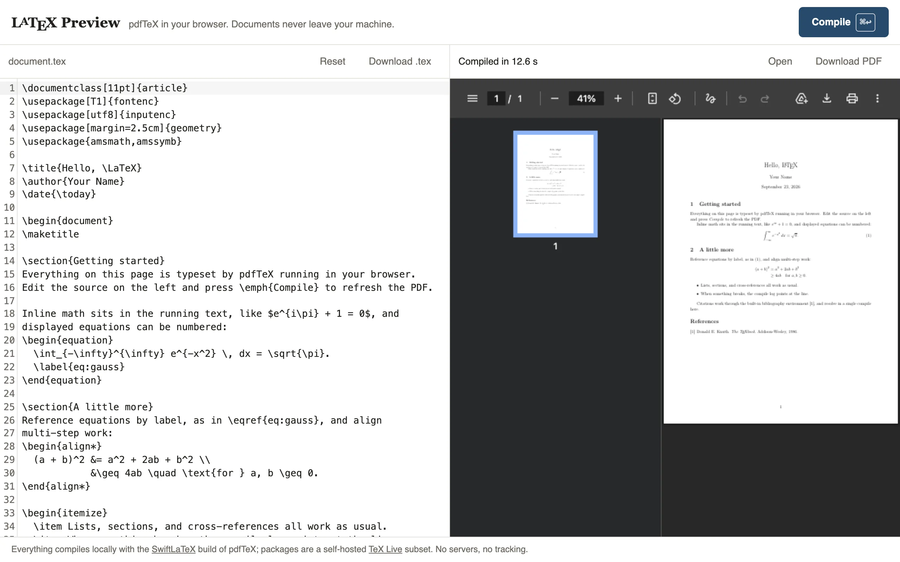

LaTeX Preview is a two-pane editor: TeX on the left, PDF on the right, and nothing between them but the browser. The compiler is SwiftLaTeX's build of pdfTeX for WebAssembly, which I vendor and run in a web worker so the editor never blocks. The 1.8 MB engine, the format file, and every class, package, and font come from the same GitHub Pages origin. There's no server to send the document to.
The engine was the easy part. Elliott Wen and the SwiftLaTeX contributors did that work, and I made two changes to the JavaScript wrapper so it runs against a plain static host. When a fetched file has no fileid header it falls back to the requested name, and a 404 is cached as a missing file, where upstream only recognised the 301 its own package server returns. The hard part was deciding which of TeX Live's files to ship, and I didn't want to guess which files a package pulls in.
Letting the compiler choose
The engine asks for files by kpathsea format id and name, /pdftex/26/geometry.sty for a package or /pdftex/3/cmr10.tfm for a font metric. So instead of guessing, I let it ask. The harvester builds the site, serves it from a local port, and drives the real engine in headless Chromium through 27 probe documents. Each probe is a complete document that uses one package or a small family the way real documents do. The tables probe sets booktabs, longtable, multirow, and tabularx tables rather than just loading the packages. The engine's requests go to a local mirror that answers from the checked-in subset first, and otherwise runs kpsewhich --format=tfm cmr10 or its equivalent against the TeX Live on my Mac. Every kpsewhich hit is recorded, copied into public/texlive/pdftex/<format>/, and added to a manifest. Anything kpsewhich can't find is a 404, which is what the deployed host would say too.
Each probe gets a fresh page and so a fresh worker, because compiles leave aux files and a package cache behind and one probe must not lean on what another downloaded. The subset today is 578 files and 31 MB: 240 font metrics, 192 Type 1 fonts, 139 classes, packages, and font definitions, five encoding files, one font map, and the format file. The Type 1 fonts are 11 MB of that and the format file 9.9 MB. All the actual TeX macros fit in 3.6 MB.
The 2020 problem
The wasm engine carries a format file dumped with LaTeX2e 2020-02-02, and I ship it as is. Current TeX Live packages assume kernel features that arrived later: the hook system, sockets, xparse in the kernel. Load today's hyperref against a 2020 format and it stops with an undefined command. So eleven packages come from the TeX Live 2020 historic archive instead of my local tree: tools (which holds array, longtable, tabularx, and multicol), xcolor, colortbl, fancyhdr, hyperref, booktabs, multirow, atveryend, atbegshi, l3packages, and siunitx, which pins the site to the v2 series because v3 needs the newer kernel. A fetch script downloads those tarballs once, sequentially with a half-second pause because it's someone else's mirror, and the harvest mirror overlays them ahead of kpsewhich.
One file is hand-written. The format preloads the L3 programming layer dated 2020-02-14, and the upstream expl3 loader refuses to run when its own date differs from the preloaded kernel's. No archived release matches that date exactly. So expl3.sty in my tree is a twelve-line stub that declares the layer present and does nothing else. Every other file under texlive/ is byte for byte what TeX Live ships.
Proving the subset is complete
The harvester has a second mode. With --verify, the mirror serves only the checked-in subset, no overlay and no kpsewhich, and every probe has to compile against that alone. CI runs it on every push. If I add a probe and forget to commit the files it pulled in, or a harvest on my machine leaned on a file that only exists locally, the build fails rather than production. That run is the definition of supported for this site. A package is on the README list only while its probe compiles from the committed tree.
The deployment has to hold up its end. The engine probes for optional files, such as .fd font definitions it may not need, and caches whatever the host answers. A static host that answers every unknown path with index.html would fill that cache with HTML pretending to be a .sty. GitHub Pages returns real 404s, which is one reason I stayed there.
Reruns and stale aux files
LaTeX resolves \ref, tables of contents, and hyperref outlines from the previous pass's aux files, so the first compile of a document with a cross-reference prints question marks. After each pass I scan the log for "Label(s) may have changed", "Rerun to get", or longtable's "Table widths have changed" notice and go again, up to three passes in total. Aux files persist inside the worker between compiles, so pressing Compile again on an unchanged document is already settled. That persistence bit me once. Switching the class from article to letter left an aux file full of article macros that letter's \@mlabel choked on, so a class change now blanks the aux, toc, lof, lot, and out files before compiling.
The first compile in a fresh browser took 12.6 seconds in my headless test run, most of it downloading and booting the engine and the format. An idle callback starts warming the engine on page load with an eight-line document, so by the time someone presses Compile the format and the amsmath family are usually cached. I haven't measured how often that race is won on a slow connection.
What's missing is mostly what a single file can't do. There is one .tex file per document, so \input and \includegraphics have nothing to point at. There is no BibTeX or biber, though a hand-written thebibliography works with natbib citation commands. There is no TikZ. And there is no shell escape, because there is no shell.